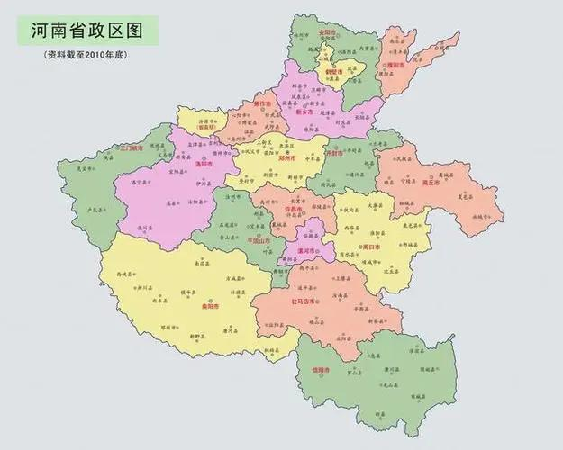
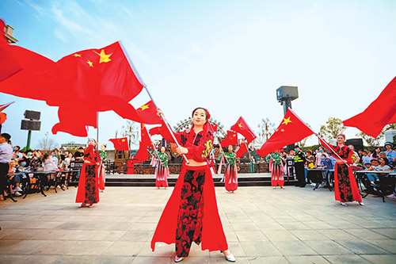

Timeless Architecture
Explore thousands of years of magnificent building heritage across the province
Overview of Henan
Henan Province, located in the central part of China, is known as the "Cradle of Chinese Civilization." With a history spanning over 5,000 years, it was the political, economic, and cultural center of China for over 3,000 years. The province is home to numerous historical sites, including the ancient capitals of Luoyang, Kaifeng, Anyang, and Zhengzhou.
Henan boasts diverse landscapes ranging from the towering Taihang Mountains in the north to the Funiu Mountains in the west, and the vast Central Plains that stretch across its heartland. The Yellow River, China's mother river, flows through the province, nurturing its fertile lands and rich cultural heritage.
Today, Henan is a vibrant modern province with a population of over 99 million people, making it the third most populous province in China. It serves as a major transportation hub connecting all parts of the country.

Featured Destinations

Longmen Grottoes
A UNESCO World Heritage Site featuring over 100,000 Buddhist statues carved into limestone cliffs along the Yi River near Luoyang, dating back to the Northern Wei Dynasty.

Shaolin Temple
The birthplace of Zen Buddhism and Chinese martial arts, nestled in the forests of Mount Song. This legendary temple has inspired millions worldwide for over 1,500 years.

Yin Ruins
The ancient capital of the Shang Dynasty (1300-1046 BC) in Anyang, where oracle bone inscriptions were first discovered, marking the dawn of recorded Chinese history.

Mount Song
One of the Five Great Mountains of China, located in Dengfeng. Its sacred peaks have been a center of Taoist and Buddhist worship for millennia.

White Horse Temple
Widely regarded as the cradle of Chinese Buddhism, this was the first Buddhist temple built in China during the Eastern Han Dynasty around 68 AD.

Yuntai Mountain
A UNESCO Global Geopark featuring stunning red sandstone canyons, waterfalls, and lush forests in Jiaozuo, offering some of Henan's most spectacular scenery.
Latest News & Updates

Henan's Cultural Tourism Booming in 2025
The province welcomes record numbers of domestic and international visitors, with heritage sites and natural attractions drawing increased attention from travelers worldwide.

New High-Speed Rail Lines Connect Major Attractions
Upgraded transportation infrastructure makes it easier than ever to explore Henan's top destinations, with direct rail access to Longmen Grottoes and Mount Song.

Luoyang Peony Festival Draws Global Visitors
The annual peony festival showcases millions of blooming flowers across the ancient capital, celebrating one of China's most beloved floral traditions.

Henan's Top Ten Red Tourism Routes Released
Discover the revolutionary heritage of Henan through curated travel routes connecting important historical sites from China's modern history.